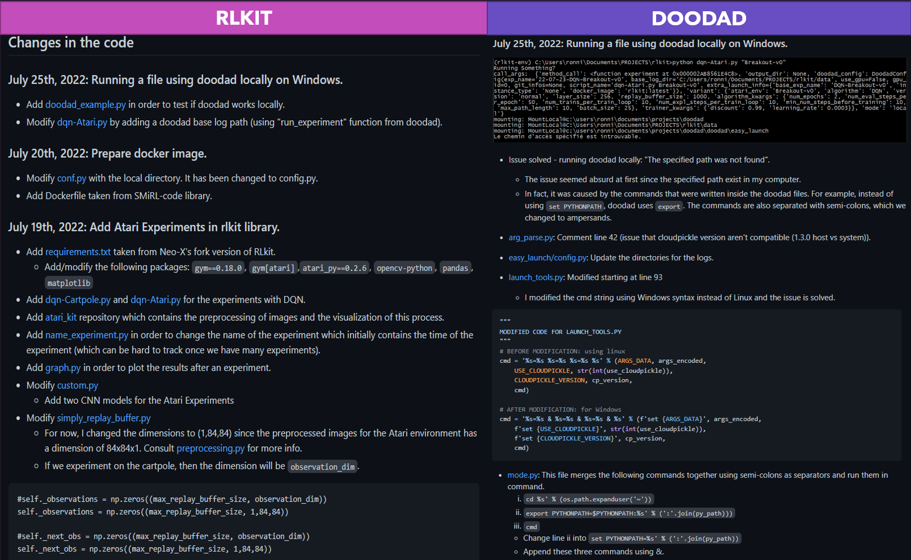
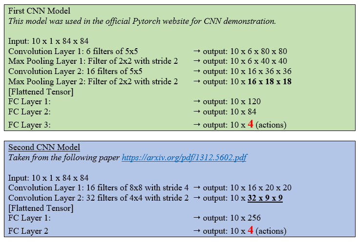
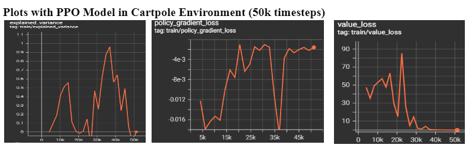

Week of July 25th and August 1st
Deadline: August 7th
- Create a virtual machine Linux (with anaconda)
- Connect to remote computer (ssh blue)
- Connect to GPU's remote computer for experiments
Week of July 17th
Deadline: July 25th
During the past workloads, the rlkit library was modified locally in my computer, but it became quite hard to keep track all the changes. I decided to fork the original repositories for rlkit and doodad in order to track down the changes I've done and the issues that I've encountered. From now on, all the changes that were made in the Github repositories will be shown here too. For the links of the repo, consult Notes and References.
Note: The changes on the Github repositories will be shown at the very end of each workload.
I will also use doodad library in order to run experiments on different computers. This week's purpose is to also understand the code from doodad and test Atari experiments locally using doodad. The goal of workloads 5 and 6 is to complete the setup for doodad in order to run experiments from the lab computer.

Week of July 11th
Deadline: July 17th
This week's purpose was to focus on learning Docker and Dockerfile in order to use them eventually
in the main project. Finally, I created an image for the rlkit library that was inspired by SMiRL-Code library's
Dockerfile. Besides learning Docker, I also took some notes related to Meta-RL
(talk given Chelsea Finn) and learned some more Pytorch basics.
Update on the topic of the project:
Also, we were initially planning on applying the concept of generalization in different humanoids
for control tasks (morphology-agnostic learning). However, due to time restrictions, I decided
to fully focus on the concept of generalization using different Atari environments since I
already wrote two different CNN policies for different Atari environments.
The goal here is to experiment on three different environments using CNN policy. The agent trains
on three different games and it needs to learn the fourth game by itself (a new game that the agent
has never seen before) based on its experience.
Week of June 27th and July 4th
Deadline: July 8th
During the previous workload, I was testing the rlkit code with DQN-Cartpole (Project I), but no changes were made in the actual code. The professor and I have decided to work on another small project (exercise), by modifying some parts of the code: (1) Change the Cartpole environment into an Atari one (Breakout), (2) Preprocess the images from the breakout game, (3) Create a new policy from scratch using Pytorch CNN.
In order to prepare for the implementation in Pytorch, I followed a playlist of Pytorch tutorials (until workload 5). This also helps me to revise the basics of deep learning and backpropagation. In this workload, I suggested two different CNN Policies for the training of Breakout Game that are shown in the figure (at the end of this block). The plots for the training aren't done since this workload was mainly focused on building a CNN Policy. For the Atari Breakout mini-project, our next goal is to test the two models with a large number of epochs with CPU and GPU. I tested in my CPU for a very small amount of epochs, so the performance was obviously not great. In order to evaluate our CNN policy, we'll have to wait until we finish setup the doodad library and the docker image in order to run experiments from the lab computer.
We also had a brief introduction to Dockerfile this week, a topic that will be covered in the next workload.

Weeks of June 13th and June 20th
Deadline: June 26th
This section of workload focuses on gathering information that is related to the project, which is expanding the concept of generalization in RL. I've found two papers that mainly talk about DQN algorithm that is applied in multiple situations: the first paper talks about fluid mechanics, whereas the second one talks about the Atari Environment. Furthermore, we have found a paper that mainly talks about generalization in RL with zero-policy transfer. In terms of readings, the goal for the upcoming weeks is to find papers that talks more about multi-task and hierarchical learning.
I also start testing the RLKIT package by testing the DQN Algorithm with the cartpole environment. The RLKIT package mainly uses PyTorch to implement different methods, so I've decided to apply the same principles but with another library, which is stable-baseline3.

- Based on the value loss plot, we can see that the agent starts to learn between 0-25k timesteps and then the function decreases once the reward is stabilized.
- Based on the policy gradient loss plot, we can see a sudden drop in 35k timesteps, which means the training is successful during this specific amount of timesteps. We observe that the loss increases significantly once it reaches over 35k timesteps.
- Based on the explained variance, at 35k timesteps, the value is 0.9633, which is the highest value of explained variance in the plot. However, it is still not superior to 1, which means our PPO model can be improved with other alternatives.
Weeks of May 30th and June 6th
Deadline: June 12th
I start by taking notes about the basics of reinforcement learning. The lectures that I listened are given by professor Steven Brunton. The lectures give an overview of numerous RL methods that are model-based and model-free. I've decided to focus on the algorithm of Q-learning and DQN, since it will be useful for the main project. Since the mathematics and the logic behind the algorithms are quite complex, I've decided to link other papers or online tutorials that will explain deeply some of the concepts that I find interesting (i.e. Q-Learning).
In terms of implementation, I start by using the stable-baseline3 package and OpenAI. I will complete three small projects before diving into the concept of generalization in RL: Atari Game, Autonomous Driving and Creating a custom environment with Gym libraries.
Week of May 23rd
We review the basics and the importance of deep learning and reinforcement learning with the professor (back propagation, overfitting, etc.). We then discuss about the upcoming tasks that need to accomplish in order to be familiar with reinforcement learning. I decide to start with simple projects that are related with reinforcement learning.
Once I have completed some small projects, we then decide to work on the main project, which is morphology traning across different environments (expanding generalization of RL). If we have more time in the future, we can try to train with a fixed training data (off-policy idea).
Week of May 16th
Deadline: May 20th
We start by discussing the topic of the project. We have found one paper that talks about the concept of improving reinforcement learning with morphology-agnostic learning. The tasks that we've decided to train on were not confirmed yet, but we're going to use this paper as inspiration for this project. I've found some ideas that I can use as different tasks to train on different agents, like playing chess, the Atari Game, or training humanoids for control tasks (application of morphology-agnostic learning), but these are all brainstormed ideas for now.